Chem 3240 · Lecture 4.1
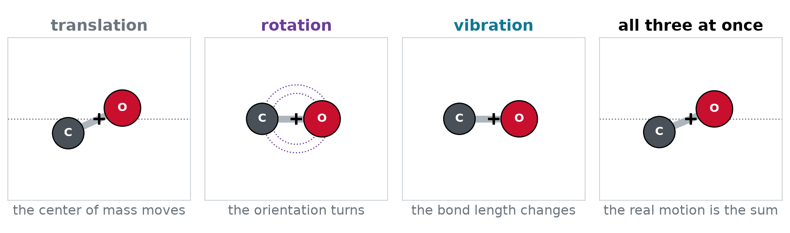
E = E_{\text{trans}} + E_{\text{rot}} + E_{\text{vib}} + E_{\text{elec}}
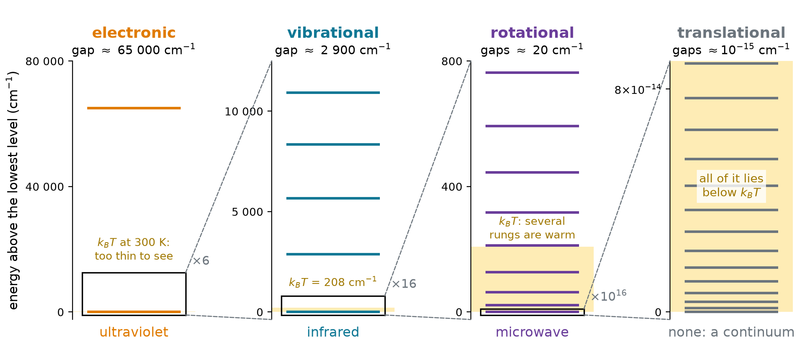
Light is absorbed when a photon h\nu matches a gap:
| motion | lowest gap in HCl | wavelength | spectroscopy |
|---|---|---|---|
| electronic | about 65 000 cm^{-1} | about 150 nm | ultraviolet |
| vibrational | 2886 cm^{-1} | 3.5 μm | infrared |
| rotational | 21 cm^{-1} | 0.5 mm | microwave |
| translational | 10^{-15} cm^{-1} | none | none: a continuum |
At 300 K, k_BT = 208 cm^{-1}. Relative to the lowest state, how populated are v = 1 and J = 1 of HCl?
\text{vibration: } e^{-2886/208} = e^{-13.9} \approx 10^{-6}
\text{rotation: } e^{-21.2/208} = e^{-0.10} = 0.90
Molecules fly and tumble freely, but nearly every bond sits in v = 0. Electrons: e^{-65\,000/208} \approx 10^{-136}.
\hat{H}_{\text{nuc}} = \sum_{i=1}^{N} -\frac{\hbar^2}{2m_i}\nabla_i^2 + E(\mathbf{R}_1, \dots, \mathbf{R}_N)
\hat{H} = \hat{H}_{\text{trans}} + \hat{H}_{\text{rot}} + \hat{H}_{\text{vib}}
\hat{H} = \hat{H}_a + \hat{H}_b \quad\Longrightarrow\quad \psi = \psi_a\,\psi_b, \qquad E = E_a + E_b
\hat{H}_a acts only on the coordinates of \psi_a, \hat{H}_b only on those of \psi_b. Show that \psi_a\psi_b is an eigenfunction of \hat{H}_a + \hat{H}_b.
(\hat{H}_a + \hat{H}_b)\,\psi_a\psi_b = (\hat{H}_a\psi_a)\,\psi_b + \psi_a\,(\hat{H}_b\psi_b)
= E_a\,\psi_a\psi_b + E_b\,\psi_a\psi_b = (E_a + E_b)\,\psi_a\psi_b \quad\checkmark
Each operator treats the other factor as a constant.
N nuclei carry 3N coordinates:
| motion | what changes | nonlinear | linear |
|---|---|---|---|
| translation | center of mass | 3 | 3 |
| rotation | orientation | 3 | 2 |
| vibration | shape | 3N - 6 | 3N - 5 |
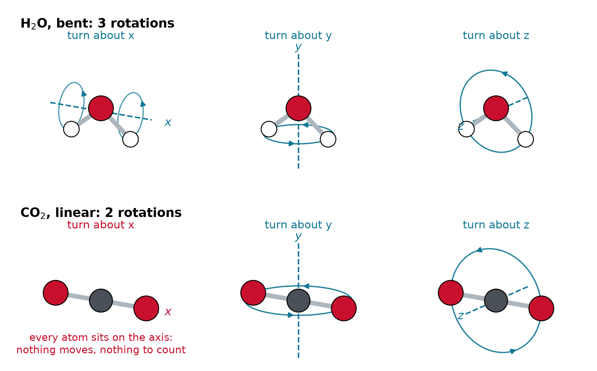
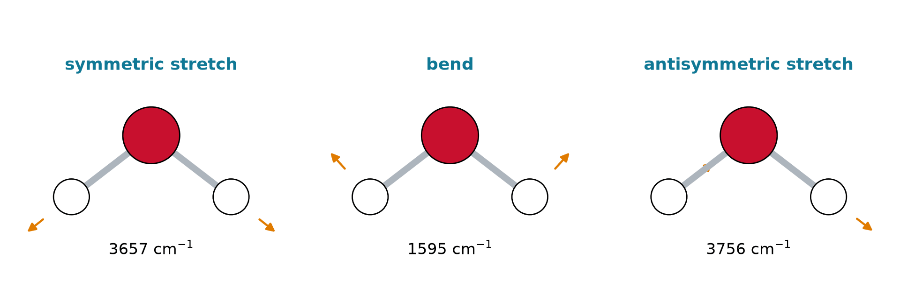
How many vibrations do NH_3 (pyramidal), C_2H_2 (linear) and HCN (linear) have?
NH_3: N = 4, nonlinear: 3N - 6 = 6
C_2H_2: N = 4, linear: 3N - 5 = 7
HCN: N = 3, linear: 3N - 5 = 4 (two stretches, and a bend in two perpendicular planes)
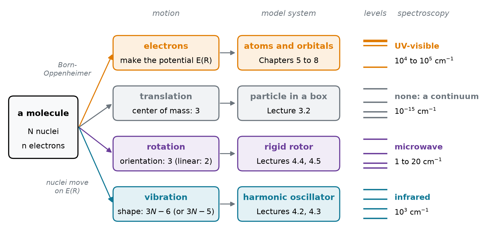
| motion | classical energy | model system | levels |
|---|---|---|---|
| translation | \dfrac{P^2}{2M} | particle in a box (3.2) | \dfrac{h^2n^2}{8ML^2} |
| rotation | \dfrac{L^2}{2I} | rigid rotor (4.4, 4.5) | \dfrac{\hbar^2}{2I}J(J+1) |
| vibration | \dfrac{p^2}{2\mu} + \dfrac{1}{2}kx^2 | harmonic oscillator (4.2, 4.3) | \hbar\omega\left(v + \tfrac{1}{2}\right) |
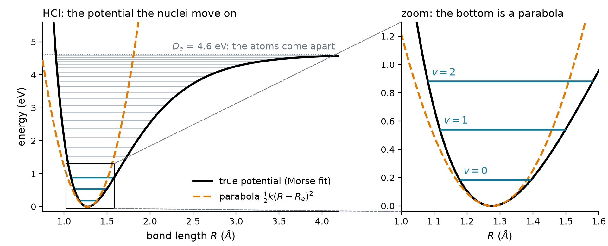
U(R) = U(R_e) + U'(R_e)\,x + \tfrac{1}{2}U''(R_e)\,x^2 + \tfrac{1}{6}U'''(R_e)\,x^3 + \dots, \qquad x = R - R_e
U(R) \approx \frac{1}{2}k\,(R - R_e)^2, \qquad k = \left.\frac{d^2U}{dR^2}\right|_{R_e}
U(x) = D\left(1 - e^{-ax}\right)^2: find k. For HCl, D = 4.62 eV and a = 1.87 Å^{-1}.
e^{-ax} \approx 1 - ax + \tfrac{1}{2}a^2x^2 \quad\Longrightarrow\quad U \approx D\left(a^2x^2 - a^3x^3\right) \quad\Longrightarrow\quad k = 2Da^2
k = 2\,(7.40\times10^{-19}\ \text{J})\,(1.87\times10^{10}\ \text{m}^{-1})^2 = 518\ \text{N/m}
m\ddot{x} = -kx \quad\Longrightarrow\quad x(t) = A\cos(\omega t + \phi), \qquad \omega = \sqrt{\frac{k}{m}}
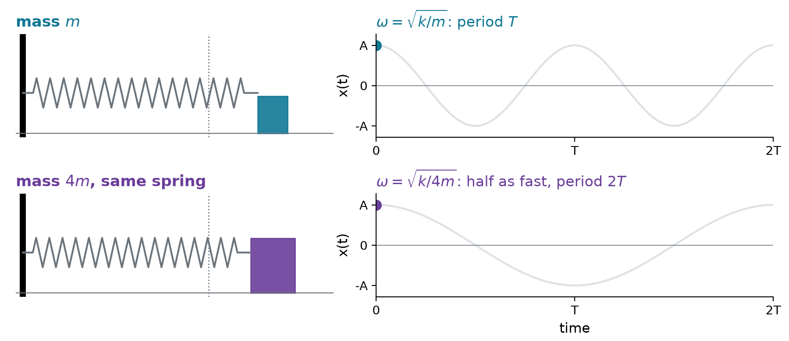
x(t) = A\cos(\omega t + \phi), \qquad \omega = \sqrt{\frac{k}{m}}, \qquad E = \frac{p^2}{2m} + \frac{1}{2}kx^2 = \frac{1}{2}kA^2
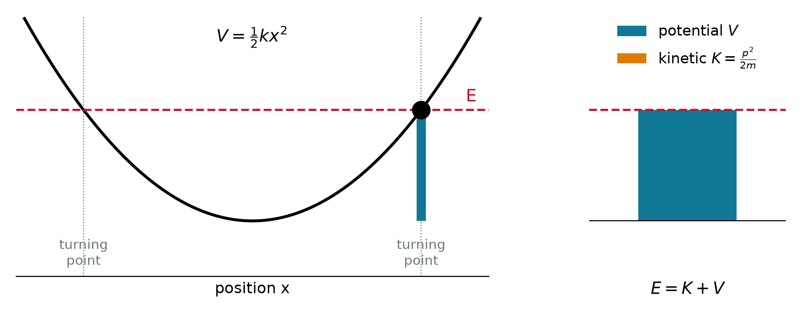
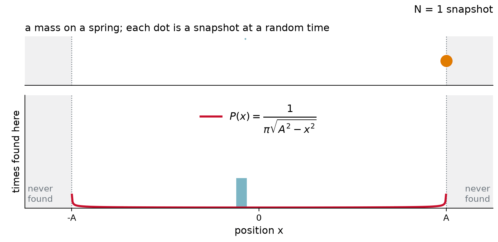
P(x) = \frac{1}{\pi\sqrt{A^2 - x^2}}
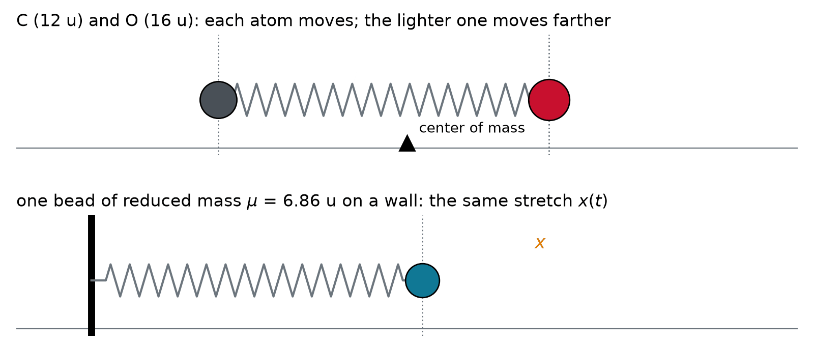
\mu = \frac{m_1m_2}{m_1 + m_2}, \qquad \mu\ddot{x} = -kx, \qquad \omega = \sqrt{\frac{k}{\mu}}
For H^{35}Cl, k = 516 N/m. Find \mu, \omega and the wavenumber \tilde{\nu} = \omega/2\pi c.
\mu = \frac{(1.008)(34.97)}{35.98}\ \text{u} = 0.980\ \text{u} = 1.627\times10^{-27}\ \text{kg}
\omega = \sqrt{\frac{516}{1.627\times10^{-27}}}\ \text{s}^{-1} = 5.63\times10^{14}\ \text{s}^{-1}, \qquad \tilde{\nu} = \frac{\omega}{2\pi c} = 2990\ \text{cm}^{-1}
Measured: 2886 cm^{-1}. The gap is anharmonicity (Lecture 4.3).
\hat{H} = -\frac{\hbar^2}{2\mu}\frac{d^2}{dx^2} + \frac{1}{2}kx^2
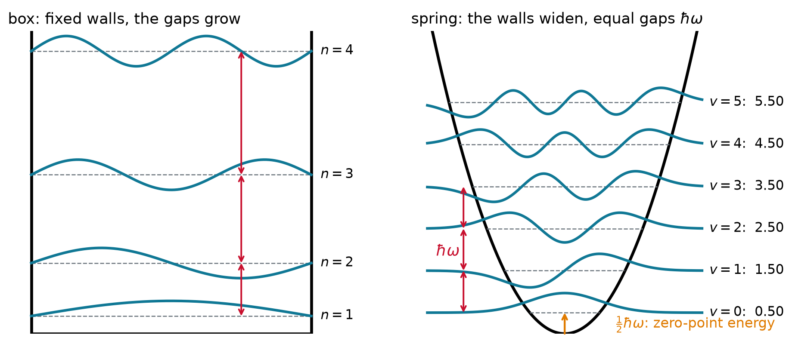
A molecule translates, rotates, vibrates and rearranges its electrons. The Hamiltonian separates, so energies add and wavefunctions multiply; the ladders differ by orders of magnitude, so each motion has its own spectroscopy. Of the 3N coordinates, 3 translate, 3 (or 2) rotate and 3N - 6 (or 3N - 5) vibrate. Near its minimum every bond is a spring: x(t) = A\cos(\omega t + \phi) with \omega = \sqrt{k/\mu} and E = \frac{1}{2}kA^2.
Chem 3240 · Quantum Mechanics